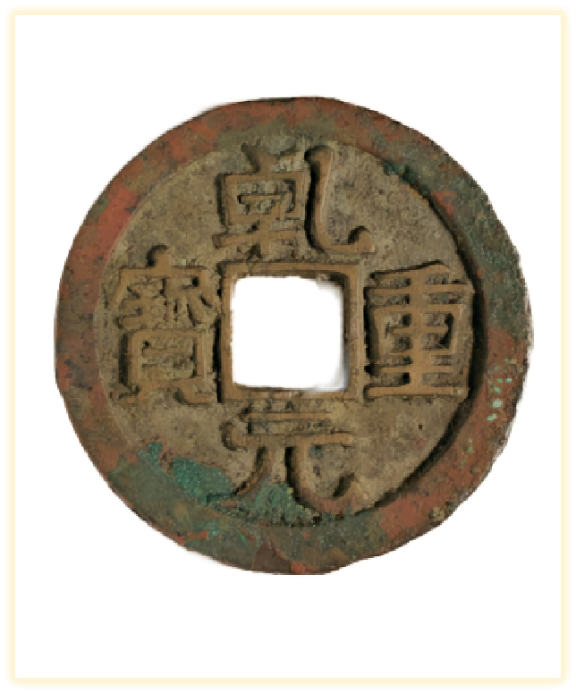

宝通千年（唐）
唐代是我国古代货币制度的确立期，在货币史上占有重要的地位。唐代钱币形制与前代大体相同，但不再以纪重作为钱文，而改为「宝」，『钱』也由此也成为称量单位，这种『钱』的重量单位成为唐以后历代钱币重量的标准。宝文钱自唐代起共流通一千二百九十年，直至民国以后才逐渐被淘汰。
宝文钱铸铭朝廷年号或吉语等，不再铸铭重量，强调的是钱币的法定流通地位，原则上是依靠朝廷法令流通的铜钱。
铜、铁、铅等金属货币在形态上从纪重钱转变为宝文钱，是货币名目化发展的必然结果。开元通宝规定了成分比例，结束了古代铸钱没有成色标准的历史，是铸币制度上的一大进步。
开元通宝
大历通宝
建中通宝

乾元重宝
拓展视频：开元通宝
五代十国（唐末藩镇割据）
五代十国延续了唐末藩镇割据混战局面，北方社会生产遭到破坏，经济、文化中心南移。五代虽延续时间不长，但每个政权都铸造发行了本政权货币。十国当中有七国均铸有货币，但铜钱总体数量较少，流通中主要使用铅钱和铁钱，还有一些为虚值大钱
天福元宝
周元通宝
开平元宝
天成元宝